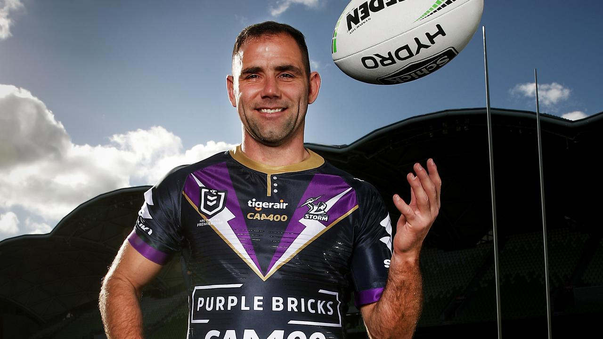
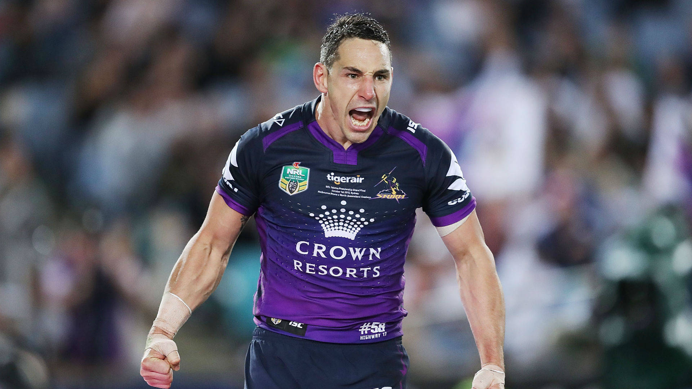
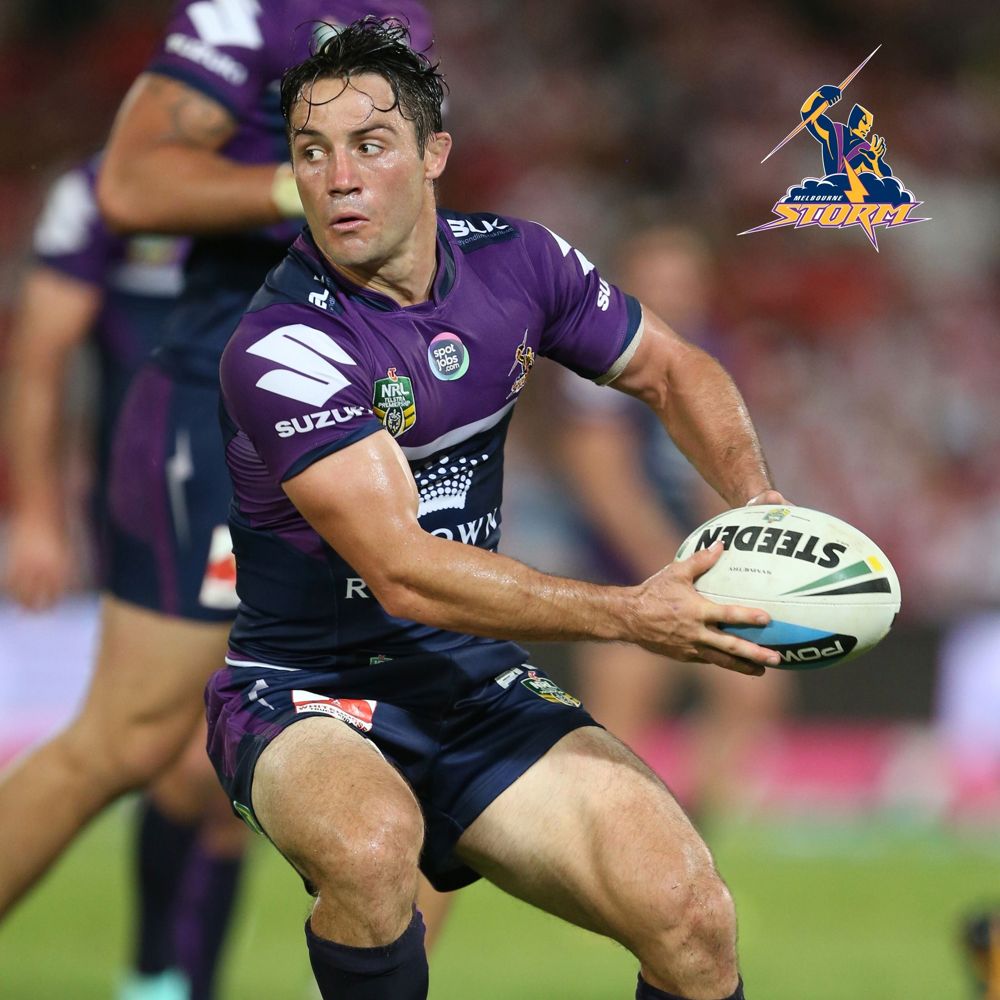

Icons who shaped the Melbourne Storm dynasty — leaders, game-breakers, and champions whose impact will never fade.

Cameron Smith
Widely regarded as the greatest hooker in rugby league history, Smith’s leadership and game management defined the Storm for nearly two decades.
Career Achievements
• 430 NRL games (most ever)
• 56 Tests for Australia
• 42 State of Origin games
• 3 Premierships (2007*, 2009*, 2012, 2017)
• 2× Dally M Medals
• Golden Boot (2007)
• Most points in NRL history (2,786)

Billy Slater
The greatest fullback of the modern era, Slater revolutionised the position with speed, instinct, and unmatched support play.
Career Achievements
• 319 NRL games
• 190 tries (2nd most ever)
• 31 Tests for Australia
• 31 Origin games
• 2× Clive Churchill Medals
• Dally M Medal (2011)
• Golden Boot (2008)

Cooper Cronk
A master organiser and clutch playmaker, Cronk’s precision kicking and game control were central to the Storm’s sustained success.
Career Achievements
• 323 NRL games
• 38 Tests for Australia
• 22 Origin games
• 2× Dally M Medals
• Clive Churchill Medal (2012)
• 4 Premierships (2012, 2017, 2018, 2019)